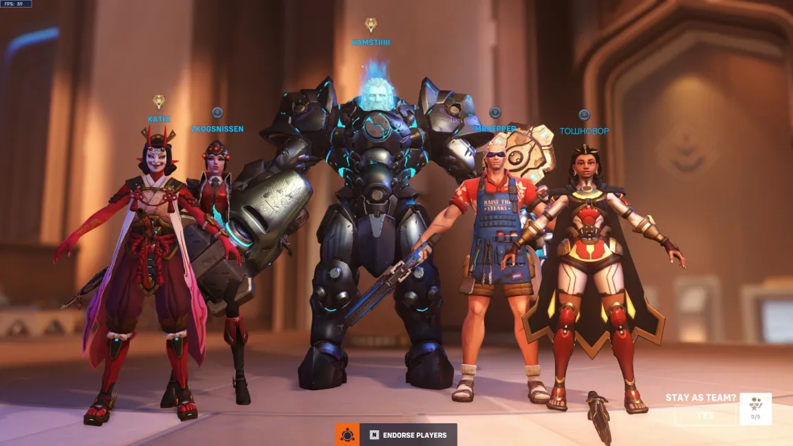
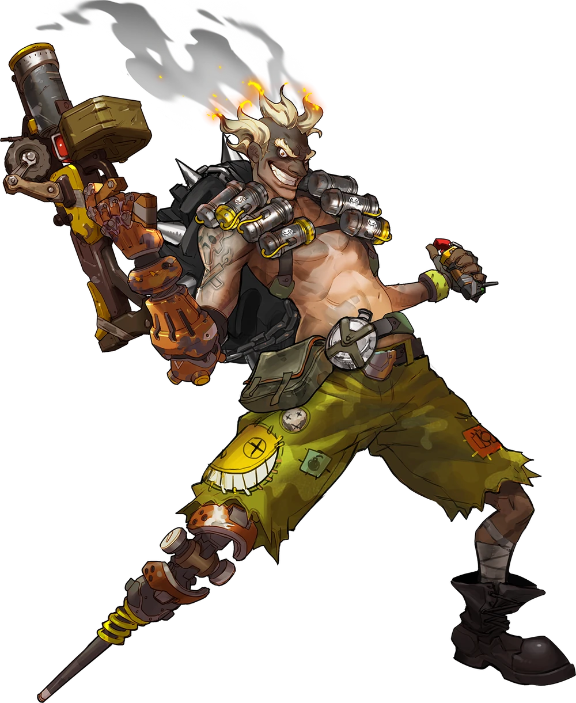
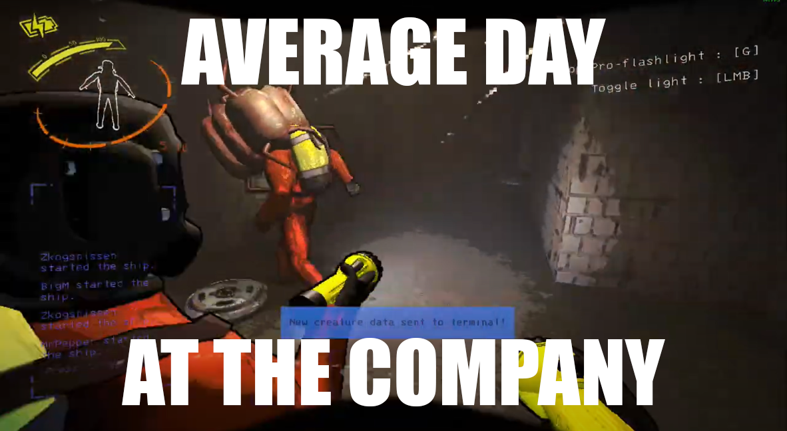
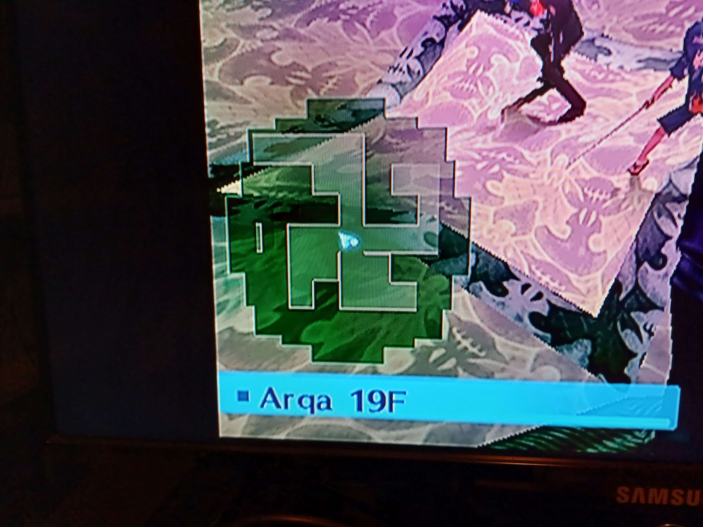
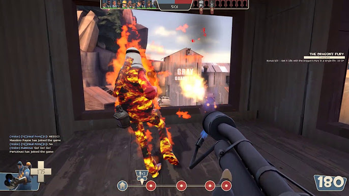
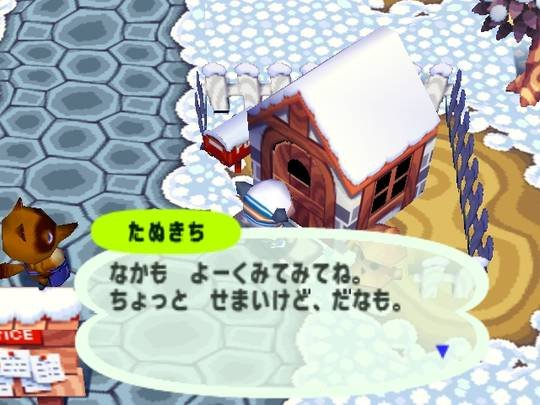

09/12 Hallå? Vad har hänt med Overwatch? Hjälp mig!

09/09 Har ni spelat hit-spelet Overwatch? Min favorit hjälte är Skräpråttan, eller Junkrat. Den bästa strategin är att stå bakom en vägg och spamma en choke. Det är vanligt att profesionella Junkrat mains aldrig ser fiendelaget en enda gång, men ändå får de flest kills och skada. Jag har hört skräckhistorier om Junkrat spelare som var tvugna att gå fram till målet i övertid och såg fiende laget; det är det värsta jag nånsin hört.

07/8 Jag har nu spelat hit-spelet Lethal Company, och detta är verkligen en genomsnittlig dag på företaget (←se bild). Jag och mina kollegor går med skräpet till tentakelmannen med ära, och missar aldrig våran andel. Vi brukar landa på en snömåne med en anläggning vars ingång påminner om det första rummet i hit-spelet Resident Bad och Resident Evil (se bakgrundsbild).

06/29 Visste ni att de som arbetar på Atlus är nazister? Kolla på bilden (← här är den), gångarna i hit-spelet Shin Megami Tensei: Persona 3 FES ska vara slumpvist generade, men det tror inte jag. Det finns ingen chans att detta inte är inprogramerat. Jag har ett till bevis: De kan inte räkna. Persona 3 är det fjärde Persona spelet. Sista beviset: Jag har hört att Hitler är med i Persona 2. Slutsats: Atlus borde förbereda sig för att förlora rättegången.

06/18 Har ni spelat Team Fortress 2? Det är ett hit-spel av Valve, och är bättre än Overwatch. Min favorit karaktär är Pyromanen (också känd som Pyro), eller Pyro. Han har en eldkastare, och när man spelar så är det bara att hålla in W och M1. Det finns ingen bättre känslan än att bara gå fram till motståndarna och bränna upp allting. Men det bästa med Team Fortress 2 är att det också går att ha spelet på svenska!

06/13 Jag har begett mig in i några hemsökta hus i hit-spelet Phasmophobia tillsammans med andra spökjägare. Vi har med ett gäng olika prylar in i huset, och åtminstone en av oss dör varje gång. Jag är dock väldigt besviken att Thomas Wilson inte bor kvar i 6 Tanglewood Drive. Mitt favorithus att leta spöken i är 42 Edgefield Road. Men något som är bättre än alla kartor lagt tillsammans (den gamla versionen av Asylum räknas inte med) är att det går att ha spelet på svenska, och det går till och med att prata med spökena på svenska!

05/23 Visste ni att hit-spelet Animal Crossing på Gamecube inte är ett Gamecube spel? Nintendo försöker gaslighta oss, men det funkar inte på mig. Det är ett japanskt Nintendo 64 spel som heter Animal Forest, som de bara portade till Gamecube. Nintendo 64 spel är så små så att spelet laddar hela spelet på en gång och läser aldrig* mer från skivan efter det.